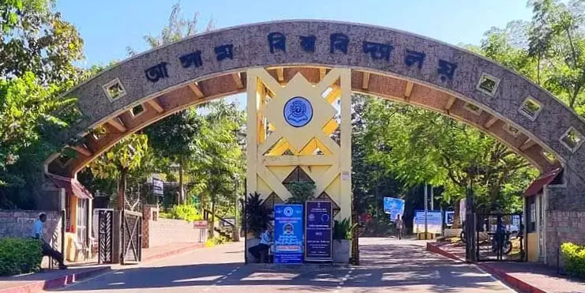
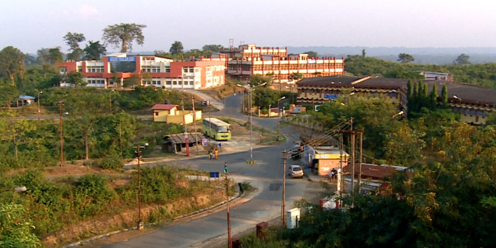
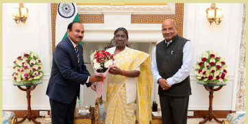
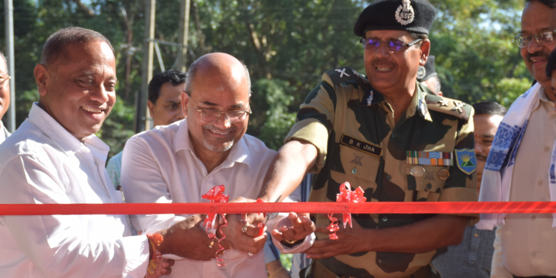

Campus Gallery




Highlights
Chancellor
Shri Arup Raha
Vice Chancellor
Prof. Rajive Mohan Pant
Total Departments
40
Total Area
600+ Acres
News & Events
- 📌 Admissions open for 2025-26
- 🎓 Application link for 22nd Convocation
- 📢Extension of Enrollment of FYUGP(NEP) Even Semester Examinations
Campus Life
Life at Assam University is vibrant and enriching. From diverse cultural festivals to engaging academic events, students enjoy a dynamic campus experience with ample opportunities to grow, explore, and thrive.